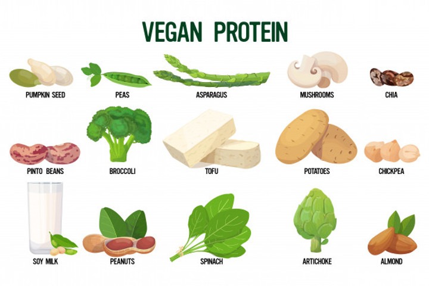
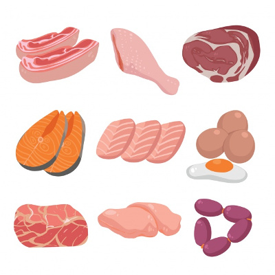
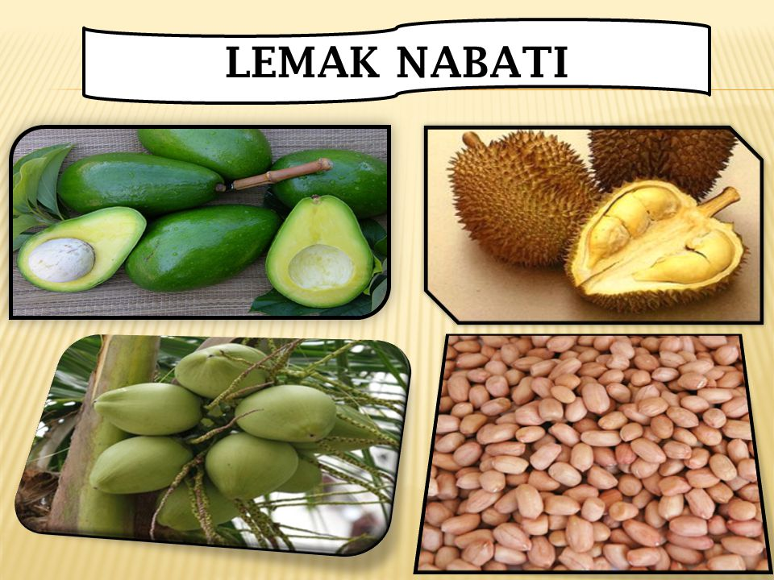
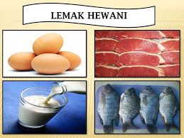
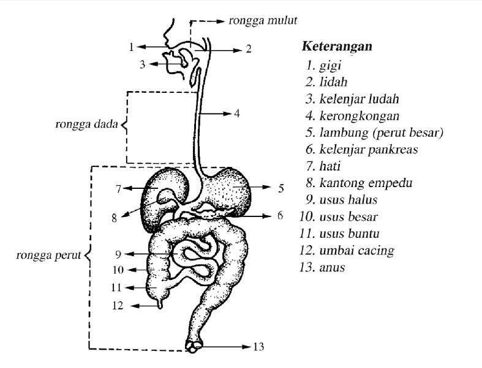
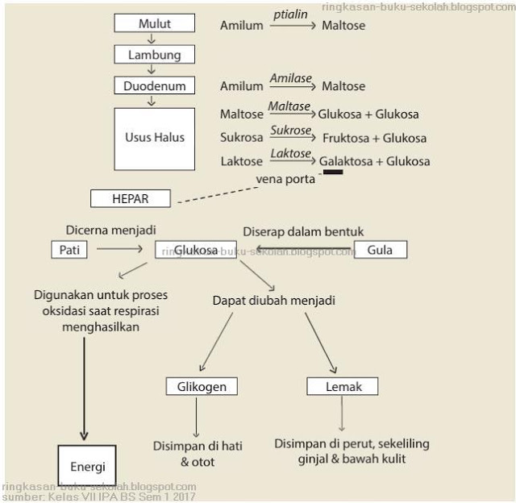
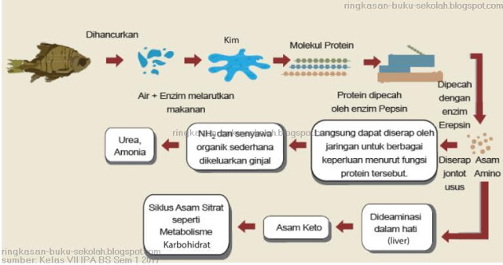
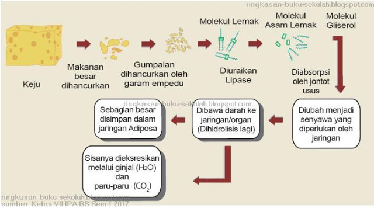

Bab 6 Energi dalam Sistem Kehidupan
Pengertian Energi
Energi adalah upaya untuk melakukan usaha/kerja atau melakukan suatu perubahan. Energi ada beberapa bentuk yaitu energi potensial, kinetik, kimia, listrik, dan sebagainya.
Terdapat 5 Jenis Energi
-
Energi Potensial adalah energi yang dimiliki suatu benda ketika benda itu diam. Contohnya batu yang diletakkan diatas meja memiliki energi potensial karena ketinggiannya, air didalam waduk memiliki energi potensial karena kedalamannya.
-
Energi potensial gravitasi adalah energi yang dimiliki suatu benda karena terletak diatas permukaan bumi. Semakin tinggi diatas permukaan bumi, semakin besar pula energi potensialnya.
-
Energi potensial elastisitas adalah energi pada benda yang diregangkan. Semakin jauh peregangan dan penekanannya, semakin besar pula energinya.Contohnya benda yang diregangkan pada karet ketapel atau busur panah yang ditarik dari panahnya.
-
Energi listrik adalah energi yang memiliki muatan listrik dan arus listrik. Energi listrik paling banyak digunakan karena mudah diubah menjadi bentuk lain. Contohnya lampu bohlam dapat menyala menggunakan energi listrik, mesin cuci dapat berfungsi menggunakan energi listrik.
-
Energi kinetik adalah energi yang dimiliki oleh benda yang bergerak atau berpindah tempat. Contohnya air mengalir di waduk akan menggerakkan turbin, ketika bersepeda otot kaki berkontraksi untuk mendorong pedal sepeda.
Sumber Energi
Sumber energi adalah segala sesuatu yang menghasilkan energi. Sumber energi ada 2 yaitu sumber energi terbarukan dan sumber energi tak terbarukan.
-
Sumber energi terbarukan adalah sumber energi yang berasal dari proses alam yang berkelanjutan. Contohnya energi matahari, PLTA, energi angin, energi tidal dan biogas dari kotoran ternak.
-
Batu bara, gas alam dan minyak bumi merupakan bahan bakar fosil yang terbentuk dari fosil tumbuhan dan hewan yang sudah melapuk jutaan tahun didalam bumi. Untuk memperoleh batu bara, gas alam dan minyak bumi diperlukan penambangan kedalam perut bumi.
-
-
Sumber energi tak terbarukan adalah sumber energi yang berasal dari alam dan akan habis apabila dieksploitasi secara terus – menerus. Contoh energi tak terbarukan yaitu batu bara, minyak bumi dan gas alam.
-
Energi matahari adalah energi yang berasal dari panas matahari dan dapat diubah menjadi energi bentuk lain. Pembangkit Listrik Tenaga Air (PLTA) adalah pemanfaatan arus air untuk menghasilkan energi listrik. Energi listrik ini disebut hidroelektrik.
-
Komponen PLTA adalah generator yang dihubungkan oleh turbin dan digerakkan oleh energi kinetik air. PLTA tidak hanya menggunakan arus air didalam waduk atau air terjun, tetapi juga bisa menggunakan ombak di lautan.
-
Energi angin adalah energi yang memanfaatkan kincir angin untuk diubah menjadi energi listrik atau energi bentuk lain. Kincir angin dibuat dalam skala besar untuk menyediakan angin didaerah yang terisolir.
-
Energi tidal adalah energi yang memanfaatkan pasang surutnya air laut untuk menghasilkan energi listrik atau energi bentuk lain. Energi tidal dikenal juga dengan energi pasang surut.
-
Biogas adalah gas yang dihasilkan oleh aktivitas anaerobik (fermentasi) bahan – bahan organik yang degradabel. Biogas ini dapat dibuat dari kotoran manusia, kotoran hewan, ataupun sampah organik yang degradabel. Biogas ini mengandung methana dan karbondioksida sehingga dapat dimanfaatkan sebagai bahan bakar penggati gas alam.
-
Makanan sebagai sumber energi
Sumber energi utama pada manusia adalah makanan. Zat makanan yang berperan sebagai sumber energi adalah karbohidrat, lemak dan protein. Karbohidrat adalah senyawa kimia yang tersusun atas unsur – unsur karbon dan merupakan sumber utama energi bagi manusia. Contoh dari karbohidrat yaitu beras, jagung, gandum, umbi – umbian dan buah yang rasanya manis.
Protein adalah senyawa kimia yang mengandung unsur C, H, O, N (kadang P dan S). Protein berfungsi sebagai sumber energi, pembangun jaringan tubuh dan pengganti sel tubuh yang rusak. Protein ada 2 jenis yaitu protein nabati dan protein hewani.
-
Protein nabati adalah protein yang berasal dari tumbuhan, contohnya gandum, kacang – kacangan, tahu dan tempe.
 -
Poretin hewani adalah protein yang berasal dari hewan, contohnya ikan, daging, telur, dan susu.

Lemak adalah senyawa kimia yang mengandung unsur C, H, dan O. Lemak ada 2 jenis yaitu lemak nabati dan lemak hewani.
-
Lemak nabati adalah lemak yang berasal dari tumbuhan, contohnya kelapa, kemiri, kacang – kacangan dan buah avokad.
 -
Lemak hewani adalah lemak yang berasal dari hewan, contohnya keju, kuning telur, mentega dan sebagainya.

Transformasi Energi dalam Sel
Transformasi energi terjadi didalam organel yang terdapat didalam sel. Jika pada tumbuhan terjadi didalam klorofil, jika pada hewan dan manusia terjadi didalam mitokondria.
Klorofil adalah zat hijau daun yang terdapat didalam kloroplas. Klorofil berfungsi dalam fotosintesis. Proses fotosintesis merupakan reaksi antara cahaya matahari, karbon dioksida dan air yang menghasilkan glukosa dan oksigen.
Glukosa hasil fotosintesis dimanfaatkan oleh tumbuhan sebagai sumber energi untuk tumbuh dan berkembang. Oksigen hasil fotosintesis ditransformasikan ke makhluk hidup lain seperti untuk respirasi manusia dan hewan. Kemudian didalam tubuh manusia dan hewan, oksigen ditransformasikan sebagai sumber energi.
Mitokondria adalah organel didalam sel hewan dan manusia yang berfungsi sebagai respirasi sel. Didalam mitokondria, energi kimia digunakan untuk mengubah karbohidrat, lemak dan protein menjadi energi kinetik (gerak) untuk melakukan aktivitas. Mitokondria banyak terdapat pada sel otot makhluk hidup dan sel saraf.
Metabolisme sel
Metabolisme adalah proses kimia yang terjadi didalam tubuh makhluk hidup. Metabolisme disebut reaksi enzimatis karena menggunakan katalisator enzim. Metabolisme ada 2 yaitu katabolisme/sintesis/pembentukan misalnya fotosintesis dan anabolisme/penguraian misalnya respirasi.
Respirasi adalah proses pembebasan energi yang tersimpan dalam zat sumber energi melalui proses kimia dengan menggunakan oksigen. Respirasi menghasilkan energi kimia untuk aktivitas kehidupan seperti anabolisme, gerak dan pertumbuhan.
Sistem Pencernaan Makanan
Sistem pencernaan manusia terdiri dari saluran dan kelenjar pencernaan. saluran pencernaan berfungsi mengubah makanan secara mekanik dan mengangkut makanan. Kelenjar pencernaan berfungsi menghasilkan enzim penting untuk pencernaan secara kimiawi. Saluran pencernaan manusia dimulai dari rongga mulut, faring, kerongkongan, lambung, usus halus, usus besar, rektum, dan diakhiri di anus. Kelenjar pencernaan terdiri dari kelenjar ludah, kelenjar lambung, hati, pankreas, dan kelenjar usus.
Di dalam tubuh manusia terdapat 3 jenis pencernaan yaitu:
-
Pencernaan Karbohidrat
 -
Pencernaan Lemak
 -
Pencernaan Protein
